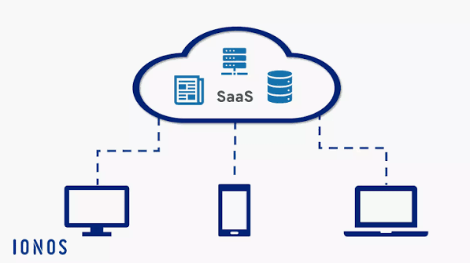
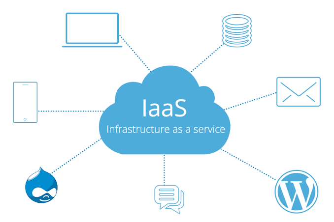
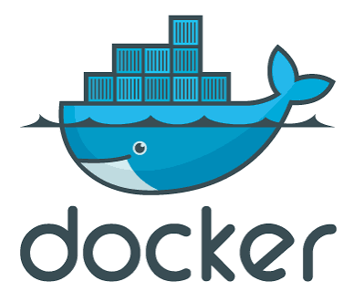

SaaS (Software as a Service)
Software como servicio. El usuario utiliza aplicaciones completas desde el navegador sin instalarlas ni mantenerlas; el proveedor se encarga de todo. Ejemplos: Gmail, Google Docs, Microsoft 365, Dropbox.
El Cloud Computing (computación en la nube) es la entrega de servicios informáticos como almacenamiento, servidores, bases de datos, redes y software a través de Internet. En lugar de comprar y mantener equipos propios, se alquilan los recursos que se necesitan y se paga solo por lo que se usa.

Software como servicio. El usuario utiliza aplicaciones completas desde el navegador sin instalarlas ni mantenerlas; el proveedor se encarga de todo. Ejemplos: Gmail, Google Docs, Microsoft 365, Dropbox.

Plataforma como servicio. Ofrece un entorno listo para que los desarrolladores creen, prueben y publiquen aplicaciones sin administrar servidores ni sistemas operativos. Ejemplos: Google App Engine, Heroku, Azure App Service.

Infraestructura como servicio. Proporciona recursos básicos de cómputo: máquinas virtuales, almacenamiento y redes. El cliente controla el sistema operativo y las aplicaciones. Ejemplos: Amazon EC2, Google Compute Engine, Microsoft Azure Virtual Machines.
Es la técnica que permite ejecutar varios sistemas operativos o servidores virtuales sobre un mismo equipo físico, gracias a un hipervisor. Aprovecha mejor el hardware, reduce costos y es la base de la nube. Ejemplos: VMware, VirtualBox, Hyper-V.

Plataforma de contenedores que empaqueta una aplicación con todas sus dependencias para que funcione igual en cualquier equipo. A diferencia de una máquina virtual, los contenedores comparten el núcleo del sistema, por lo que son más ligeros y rápidos de iniciar.